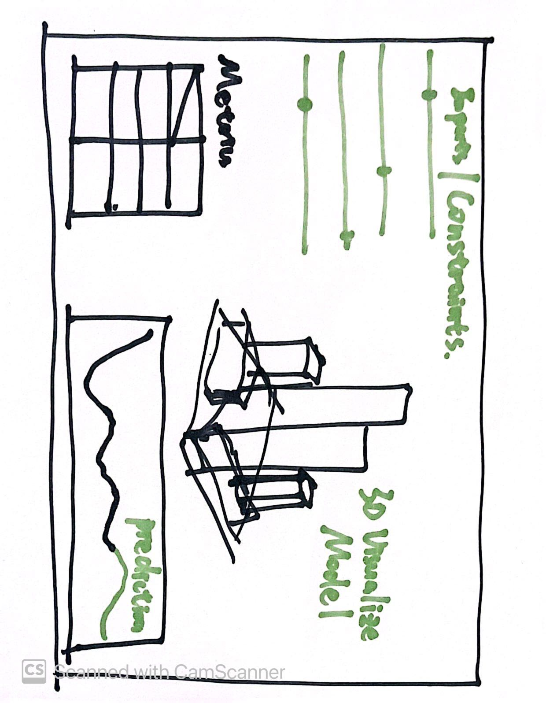

Yilin Wang
1 – Idea1
Smart Building Energy Design Platform
Concept and Research questions for project
How can a combination of machine learning and generative design be utilized in real-time optimzation for architectural energy efficiency and environmental adaptability?
Computational tools and design methods
Data Collection & Preprocessing: Collection of existing architectural design parameters, environmental factors, historical energy consumption.
Machine Learning Models: Development of regression analysis and time series prediction models for forecasting energy demand and environmental performance.
Generative Design Integration: Incorporation of ML inputs with generative design tools like Grasshopper for visualizing design models and corresponding metrics.
related precedents
Delve is an innovative tool that leverages machine learning and generative design to optimize urban development projects. It assists in creating designs that maximize overall value while considering various constraints and requirements.
There are some open-source repos available on GitHub that employ machine learning algorithms for predicting building energy consumption. These projects utilize historical energy use data, environmental conditions to train and validate their predictive models, offering a base for understanding and forecasting energy demands in different types of buildings.
Data for exploration
Need access to datasets containing building parameters and constraints, environmental conditions, user behavior, and energy consumption. This data need to be found on publicly available datasets.
Project Scales
The project operates on multiple scales, from individual buildings to urban blocks.
Sketches and Audiences
The sketch is a user interface where designers input building parameters and receive real-time feedback as well as energy consumption prediction. The primary audience would be architects and urban designers.
2 – Idea2
Generate cities from cities
Research Question
How can the pix2pix GAN, trained on urban satellite imagery, assist designers in generating prospective urban layouts for areas under development or transformation?
Computational tools and design methods
Data Collection & Preprocessing: Utilizing urban satellite imagery, specifically focusing on the patterns of differnet varieties of urban spaces.
ML - pix2pix: Implementing and training a pix2pix GAN that learns the characteristics of these urban spaces from the collected images.
Design Generation & Visualization(in GH): Applying the trained model to images of areas under development, generating and visualizing potential urban layouts that follow the learned patterns.


Related Precedents
pix2pix Projects: Existing applications of pix2pix in image-to-image translation tasks, particularly those related to spatial or architectural design. These GAN algorithms nowadays are quite mature.
MIT media lab: The Deep Image of the City: the project utilizes GANs to create deep images of cities, which are essentially synthesized representations of urban areas that don't necessarily exist in reality but are plausible based on the learned patterns and features from real urban imagery.
Data for Exploration
Collection of diverse urban satellite images, preferably annotated or categorized based on the urban planning variety(for example, the road, natural condition), to train the pix2pix model effectively.
Project Scales
While initial tests may focus on specific districts or areas within cities, the methodology can be also applied to villages(for example, traditional villages in China)
Sketches and Audiences
Sketches will depict the workflow from satellite image input, pix2pix processing, to generated urban layout output and visualize the 2d images in 3d way. The target audience includes urban designers, architects, and city planners as well as public.


3 –
Idea3Research Question: Can we develop architectural elements that adapt in real-time to environmental changes, using Machine Learning and environmental sensors?
Computational Tools and Design Methods
Data Collection & Preprocessing: Implement environmental sensors to gather real-time data on factors like temperature, humidity, light intensity, and air quality.
Responsive Architectural Elements: Develop elements like dynamic facades, adjustable louvers, or smart windows that react to the analyzed data, adapting their configurations to maintain interior comfort and energy efficiency.


Data for Exploration
Sensors will continuously gather environmental data. Ensure accessibility to this data stream for analysis and response triggering in the architectural elements.
Project Scale
The project can be applicable to single architectural elements or even entire building facades,etc.
related precedents
Autodesk Project Dasher employs environmental sensors to gather continuous data on various parameters like temperature, humidity, occupancy, and energy consumption. This sensor-derived data is then dynamically mapped onto the building's 3D BIM model. Through this integration, Project Dasher provides a comprehensive, real-time overview of the building's performance and environmental conditions, enabling architects, engineers, and facility managers to understand and optimize the operation of buildings effectively.